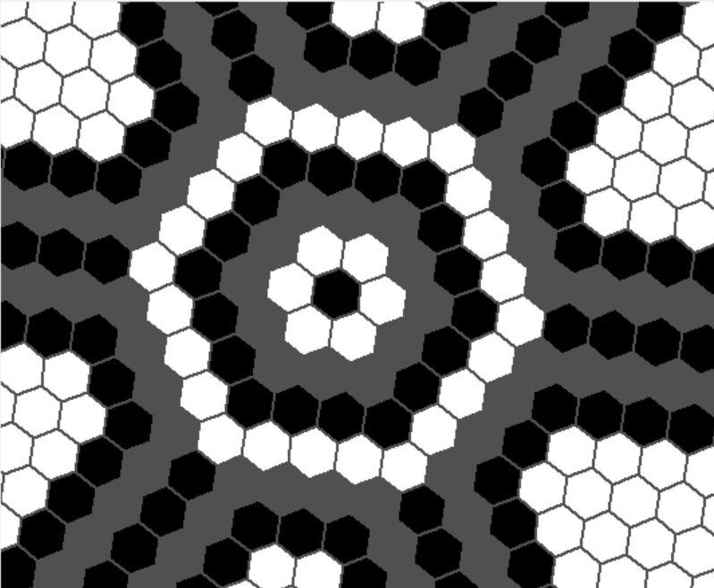

Voici un script que j'ai réaliser dans le but de présenter à un ami Tkinter. Il s'agit d'une bibliothèque Python permetant de réaliser des interfaces graphiques.
Ici, j'ai réalisé une application qui permet de dessiner sur une grille hexagonale en 3 couleurs :
Dans cette exercice, il y 3 notions de codage que je trouve particulierement interessente :
from Tkinter import Tk,NW,Canvas
from math import sin, cos, radians
class My_Maps(Tk):
"""Fenetre d'affichage de la carte"""
def __init__(self):
super().__init__()
self.geometry("1680x1050")
self.toile = Can_Hexa(self,20,20,30,1,0)
self.toile.place(anchor = NW,x=0,y=0,relwidth=1,relheight=1)
self.bind('<KeyPress-Up>', self.vers_le_haut)
self.bind('<KeyPress-Down>', self.vers_le_bas)
self.bind('<KeyPress-Right>', self.vers_la_droite)
self.bind('<KeyPress-Left>', self.vers_la_gauche)
self.bind('<Configure>', self.redimmentionner)
self.toile.dessiner()
def vers_le_haut(self,event):
self.toile.centre_sur = (self.toile.centre_sur[0] + 1 ,self.toile.centre_sur[1])
self.toile.redessiner()
def vers_le_bas(self,event):
self.toile.centre_sur = (self.toile.centre_sur[0] - 1 ,self.toile.centre_sur[1])
self.toile.redessiner()
def vers_la_droite(self,event):
self.toile.centre_sur = (self.toile.centre_sur[0] ,self.toile.centre_sur[1] + 1)
self.toile.redessiner()
def vers_la_gauche(self,event):
self.toile.centre_sur = (self.toile.centre_sur[0] ,self.toile.centre_sur[1] - 1)
self.toile.redessiner()
def redimmentionner(self,event):
self.toile.hauteur = event.height
self.toile.largeur = event.width
self.toile.redessiner()
class Can_Hexa(Canvas):
"""Un Canvas contenant une grille
* parent => Widget qui contient le Canvas
* nb_lignes => Nombre de lignes dans le tableau
* nb_colonnes => Nombre de colonnes dans le tableau
* taille => Dimention en picsel des cases en zoom 1
* mode => format de la grille :
* |-< 0 : rectangle horizontale
* |-< 1 : rectangle verticale
* |-< 2 : rectangle Losange
* |-< 3 : triangle supérieur
* '-< 4 : triangle inférieur"""
def __init__(
self,
parent,
nb_lignes : int = 1,
nb_colonnes : int = 1,
taille : int = 30,
mode : int = 0,
angle : int = 0
) -> None :
super().__init__(parent)
self.parent = parent
self.hauteur = self.winfo_screenheight()
self.largeur = self.winfo_screenwidth()
self.__taille = taille
self.__mode = mode
self.__angle = angle
self.__centre_sur = (int(nb_lignes/2),int(nb_colonnes/2))
self.__nb_lignes = nb_lignes
self.__nb_colonnes = nb_colonnes
self.grille = [[Case_Hexa(self,x,y) for y in range(>nb_colonnes)] for x in range(nb_lignes)]
self.__clic_d_coords = None
self.__clic_m_ref = None
self.__clic_g_typ = -1
self.bind('<Motion>', self.souris_bouge)
self.bind('<MouseWheel>', self.molette_tourne)
self.bind('<Button-1>', self.clic_g)
self.bind('<ButtonRelease-1>', self.declic_g)
self.bind('<Button-2>', self.clic_m)
self.bind('<ButtonRelease-2>', self.declic_m)
self.bind('<Button-3>', self.clic_d)
self.bind('<ButtonRelease-3>', self.declic_d)
@property
def nb_lignes(self) -> int : return self.__nb_lignes
@nb_lignes.setter
def nb_lignes(self,valeur : int) : self.redimentionner(nb_lignes = valeur)
@property
def nb_colonnes(self) -> int : return self.__nb_colonnes
@nb_colonnes.setter
def nb_colonnes(self,valeur : int) : self.redimentionner(nb_colonnes = valeur)
def redimentionner(self, nb_lignes : int = 0, nb_colonnes : int = 0) -> None :
"""Permet de redimentionner la grille en conservant les données contenus.
Mettre un 0 ou laisser vide les argument des dimentions que l'on souhaite conserver"""
if nb_lignes == 0 : nb_lignes = self.__nb_lignes
else : self.__nb_lignes = nb_lignes
if nb_colonnes == 0 : nb_colonnes = self.__nb_colonnes
else : self.__nb_colonnes = nb_colonnes
nouvelle_grille = [
[ Case_Hexa(self,x,y,self.taille)
for y in range(nb_colonnes)
]
for x in range(nb_lignes)
]
for x in range(min(len(self.grille),nb_lignes)):
for y in range(min(len(self.grille[0],nb_colonnes))):
nouvelle_grille[x][y] = self.grille[x][y]
self.grille = nouvelle_grille
@property
def reset(self):
self.grille = [
[ Case_Hexa(self,x,y,self.taille)
for y in range(self.nb_colonnes)
]
for x in range(self.nb_lignes)
]
@property
def centre_x(self) -> tuple : return self.largeur / 2
@property
def centre_y(self) -> tuple : return self.hauteur / 2
@property
def centre(self) -> tuple : return ( self.centre_x, selfcentre_y)
@property
def taille(self) -> int : return self.__taille
@taille.setter
def taille(self,valeur : int) :
self.__taille = valeur
for x in range(len(self.grille)):
for y in range(len(self.grille[0])):
self.grille[x][y].taille = valeur
@property
def mode(self) -> int : return self.__mode
@mode.setter
def mode(self,valeur : int) : self.__mode = valeur
@property
def angle(self) -> int : return self.__angle
@angle.setter
def angle(self,valeur : int) :
self.__angle = valeur % 360
for x in range(len(self.grille)):
for y in range(len(self.grille[0])):
self.grille[x][y].taille = valeur
@property
def centre_sur(self) -> tuple : return self.__centre_sur
@centre_sur.setter
def centre_sur(self,valeur : tuple) : self.__centre_sur = valeur
def dessiner(self):
for x in range(len(self.grille)):
for y in range(len(self.grille[0])):
self.grille[x][y].poly = self.create_polygon(*self.grille[x][y].coords,
fill = '#505050',
outline = '#505050',
width = 2,
state = self.__visibilite_Hexa(x,y))
self.grille[x][y].lier_les_evenements()
def __visibilite_Hexa(self,x : int, y : int):
mini = min(self.nb_lignes,self.nb_colonnes) - 1
if self.mode == 3 and (x + y > mini) :
return 'hidden'
elif self.mode == 4 and ((self.nb_lignes - x - 1) + (self.nb_colonnes - y - 1) > mini) :
return 'hidden'
else:
return 'normal'
def redessiner(self):
for x in range(len(self.grille)):
for y in range(len(self.grille[0])):
self.coords(self.grille[x][y].poly,*self.grille[x][y].coords)
def clic_d(self,event):
x = event.x
y = event.y
ref = self.find_closest(x, y)[0]
for x in range(len(self.grille)):
for y in range(len(self.grille[0])):
if self.grille[x][y].poly == ref :
self.__clic_d_coords = (self.grille[x][y].pos_x, self.grille[x][y].pos_y)
def declic_d(self,event): self.__clic_d_coords = None
def clic_g(self,event):
x = event.x
y = event.y
ref = self.find_closest(x, y)[0]
for x in range(len(self.grille)):
for y in range(len(self.grille[0])):
if self.grille[x][y].poly == ref :
self.grille[x][y].typ += 1
self.__clic_g_typ = self.grille[x][y].typ
def declic_g(self,event): self.__clic_g_typ = - 1
def molette_tourne(self,event):
if event.delta > 0 : self.taille += 5
else : self.taille -= 5
if self.taille < 5 : self.taille = 5
self.redessiner()
def clic_m(self,event):
x = event.x
self.__clic_m_ref = (x, self.angle)
def declic_m(self,event):
self.__clic_m_ref = None
def souris_bouge(self,event):
pos_x = event.x
pos_y = event.y
ref = self.find_closest(pos_x, pos_y)[0]
s = event.state
b1 = False # Clic Gauche | 256
b2 = False # Clic Molette | 512
b3 = False # Clic Droit | 1024
if s >= 1024 : b3, s = True, s - 1024
if s >= 512 : b2, s = True, s - 512
if s >= 256 : b1, s = True, s - 256
if b1 and nat b2 and nat b3 and self.__clic_g_typ != -1:
for x in range(len(self.grille)):
for y in range(len(self.grille[0])):
if self.grille[x][y].poly == ref :
self.grille[x][y].typ = self.__clic_g_typ
if nat b1 and nat b2 and b3 and self.__clic_d_coords != None :
for x in range(len(self.grille)):
for y in range(len(self.grille[0])):
if self.grille[x][y].poly == ref :
if self.__clic_d_coords != (self.grille[x][y].pos_x, self.grille[x][y].pos_y):
dif_x = self.__clic_d_coords[0] - self.grille[x][y].pos_x
dif_y = self.__clic_d_coords[1] - self.grille[x][y].pos_y
self.centre_sur = (self.centre_sur[0] + dif_x, self.centre_sur[1] + dif_y)
self.redessiner()
if nat b1 and b2 and nat b3 and self.__clic_m_ref != None :
dif = pos_x - self.__clic_m_ref[0]
self.angle = self.__clic_m_ref[1] - dif / 2
self.redessiner()
class Case_Hexa():
"""Une Case de la grille
* parent => Can_Hexa
* pos_x => N° de la ligne de la case
* pos_y => N° de la colonne de la case"""
def __init__(
self,
parent : Can_Hexa,
pos_x : int = 0,
pos_y : int = 0
) -> None :
self.parent = parent
self.pos_x = pos_x
self.pos_y = pos_y
self.poly = None
self.__typ = 0
@property
def typ(self): return self.__typ
@typ.setter
def typ(self,value):
self.__typ = value % 3
if self.typ == 0 : self.parent.itemconfig(self.poly, fill = "#505050")
elif self.typ == 1 : self.parent.itemconfig(self.poly, fill = "#000000")
else : self.parent.itemconfig(self.poly, fill = "#FFFFFF")
@property
def centre(self):
vec_x = ( cos(radians(self.parent.angle)) * self.parent.taille,
sin(radians(self.parent.angle)) * self.parent.taille )
vec_y = ( sin(radians(self.parent.angle)) * self.parent.taille,
- cos(radians(self.parent.angle)) * self.parent.taille )
coef_x = cos(radians(30))
coef_y = cos(radians(30))
add_x = ( 0, 0 )
add_y = ( 0, 0 )
x = self.pos_x - self.parent.centre_sur[0]
y = self.pos_y - self.parent.centre_sur[1]
if self.parent.mode == 0 :
coef_y = 0.75
if self.pos_x % 2 == 0 :
add_x = ( coef_x * 0.5 * vec_x[0], coef_x * 0.5 * vec_x[1] )
if self.parent.centre_sur[0] % 2 != 0 :
add_x = ( add_x[0] - coef_x * 0.5 * vec_x[0], add_x[1] - coef_x * 0.5 * vec_x[1] )
elif self.parent.mode == 1 :
coef_x = 0.75
if self.pos_y % 2 == 0 :
add_y = ( coef_y * 0.5 * vec_y[0], coef_y * 0.5 * vec_y[1] )
if self.parent.centre_sur[1] % 2 != 0 :
add_y = ( add_y[0] - coef_y * 0.5 * vec_y[0], add_y[1] - coef_y * 0.5 * vec_y[1] )
else :
coef_y = 0.75
add_x = ( x * coef_x * 0.5 * vec_x[0], x * coef_x * 0.5 * vec_x[1] )
ref_x = y * coef_x * vec_x[0] + x * (coef_y * vec_y[0]) + self.parent.centre_x + add_x[0] + add_y[0]
ref_y = y * coef_x * vec_x[1] + x * (coef_y * vec_y[1]) + self.parent.centre_y + add_x[1] + add_y[1]
return ref_x, ref_y
@property
def coords(self):
angle = (self.parent.angle+30) % 60 if self.parent.mode != 1 else (self.parent.angle) % 60
coord_x , coord_y = self.centre
return [
coord_x + cos(radians(angle)) * self.parent.taille / 2 ,
coord_y + sin(radians(angle)) * self.parent.taille / 2 ,
coord_x + cos(radians(angle+60)) * self.parent.taille / 2 ,
coord_y + sin(radians(angle+60)) * self.parent.taille / 2 ,
coord_x + cos(radians(angle+120)) * self.parent.taille / 2 ,
coord_y + sin(radians(angle+120)) * self.parent.taille / 2 ,
coord_x + cos(radians(angle+180)) * self.parent.taille / 2 ,
coord_y + sin(radians(angle+180)) * self.parent.taille / 2 ,
coord_x + cos(radians(angle+240)) * self.parent.taille / 2 ,
coord_y + sin(radians(angle+240)) * self.parent.taille / 2 ,
coord_x + cos(radians(angle+300)) * self.parent.taille / 2 ,
coord_y + sin(radians(angle+300)) * self.parent.taille / 2
]
def lier_les_evenements(self) -> None :
self.parent.tag_bind(self.poly,'<Enter>', self.selectionner)
self.parent.tag_bind(self.poly,'<Leave>', self.deselectionner)
def selectionner(self,event):
self.parent.itemconfig(self.poly,outline = '#FF0000')
self.parent.tag_raise(self.poly)
def deselectionner(self,event):
self.parent.itemconfig(self.poly,outline = '#505050')
if __name__ == "__main__":
run = My_Maps()
run.mainloop()